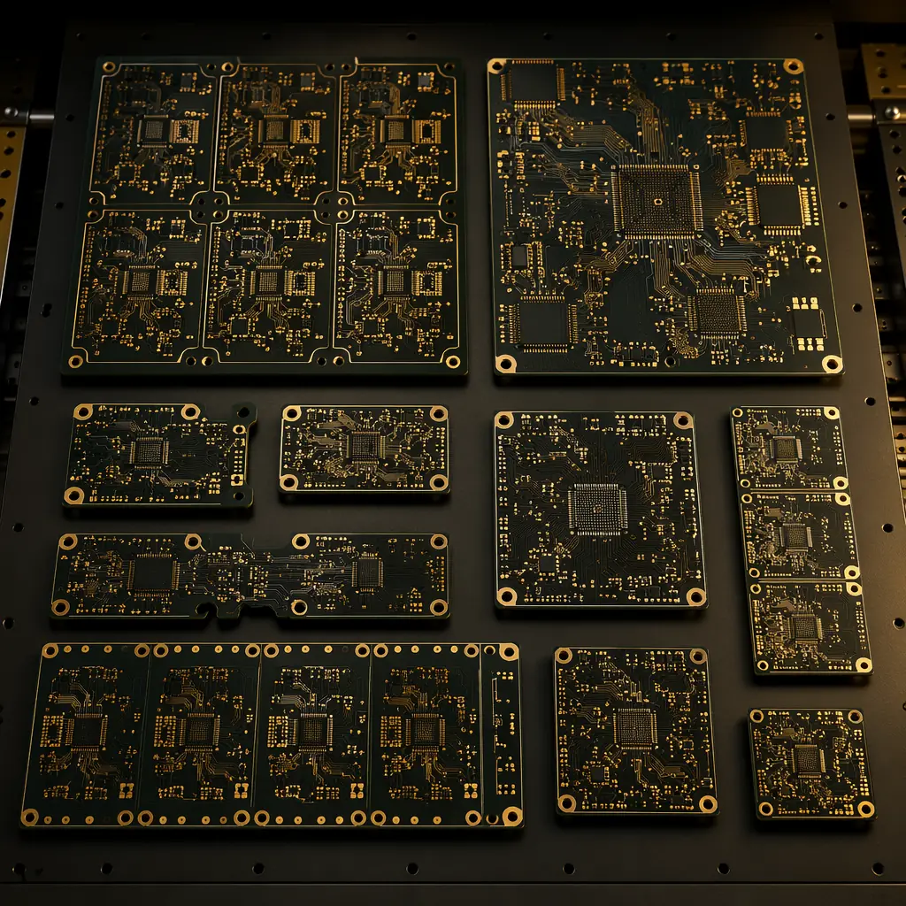
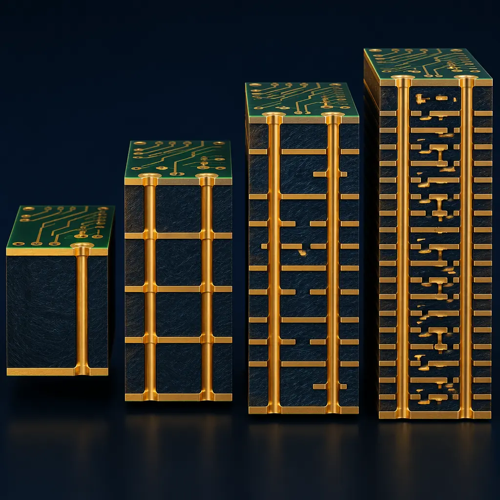
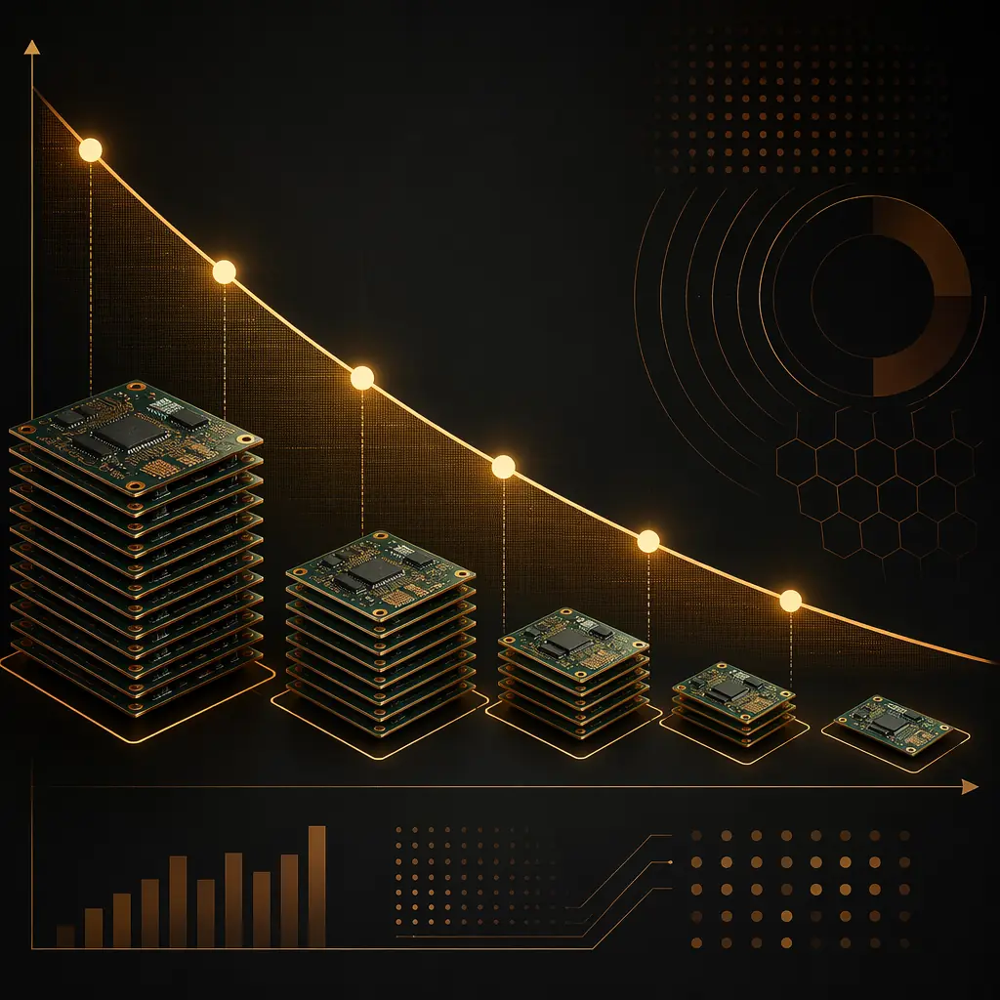
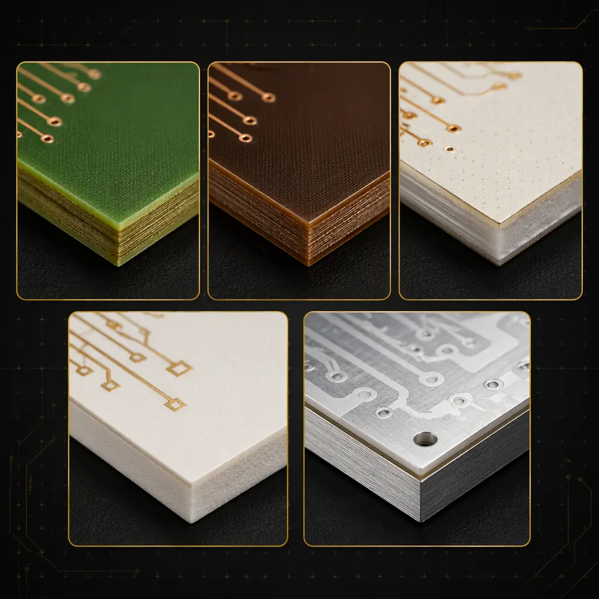

42|
42| PCB pricing is not a mystery. It follows a predictable structure driven by seven variables — and most procurement managers overpay because they optimize the wrong ones. A 10-cent saving on surface finish can cost $2 in yield loss. A $50 design change can save $5,000 in scrap across a production year.
57| 58|This guide explains exactly what drives PCB cost, with real numbers from our Shenzhen manufacturing facility. We build 80,000㎡ of PCB monthly across 2-32 layer designs, serving 150+ customers in 30+ countries. Every cost factor below reflects actual production economics, not theoretical pricing models.
59| 60|
61| 62|The 7 Cost Drivers (Ranked by Impact)
63| 64|Here are the seven factors that determine your per-unit PCB cost, ranked from highest to lowest impact on a typical 4-layer production order. Percentages represent the approximate contribution to total cost variance between a budget and premium build of the same size:
65| 66|Layer Count — 30-40% of Cost Variance
70|The single biggest cost driver. A 2-layer PCB costs roughly $15-25/panel in volume; a 16-layer PCB costs $120-200/panel. The jump isn't linear — each additional layer pair requires a full lamination cycle, doubling the process steps. See our HDI guide for how microvia technology changes this equation.
71|Base Material — 15-25% of Cost Variance
78|Standard FR-4 (Tg 130°C) is the baseline. Moving to High-Tg FR-4 (Tg 170-180°C) adds 20-30%. Rogers 4350B for RF applications adds 200-400%. Ceramic-filled PTFE for millimeter-wave can add 500%+. Our materials guide maps each laminate to its cost tier and application.
79|Order Volume — 10-20% of Cost Variance
86|The difference between prototype quantity (5-50 pcs) and production quantity (1,000+) is typically 60-80% in per-unit cost. The crossover point varies by complexity — for 4-layer boards, it's around 200-300 pieces. Our prototype vs production guide explains when it makes economic sense to bridge with a pilot run.
87|Surface Finish — 8-15% of Cost Variance
94|HASL (lead-free) is the cost baseline. ENIG adds 15-25%. ENEPIG (for wire bonding) adds 40-60%. Hard gold for edge connectors adds 30-50% on the affected area. See our ENIG vs HASL comparison for when the premium is justified.
95|Minimum Feature Size — 5-12% of Cost Variance
102|Moving from 6/6mil trace/space to 3/3mil requires laser direct imaging (LDI) instead of conventional exposure, adding 10-20%. Below 3mil requires modified semi-additive processing (mSAP), adding 30-50%. Via size below 0.2mm requires laser drilling instead of mechanical, adding further cost.
103|Controlled Impedance — 5-10% of Cost Variance
110|±10% tolerance is standard. Tightening to ±5% (common in high-speed digital and RF) requires TDR testing on every panel and tighter dielectric thickness control, adding 10-20%. Read our impedance control guide for the engineering behind the cost.
111|Lead Time — 3-8% of Cost Variance
118|Standard lead time (5-7 days for production) is the cost baseline. 48-hour expedite typically adds 30-50%. 24-hour service adds 50-100%. The premium isn't just rush charges — it's the cost of breaking production schedules and reserving capacity. DFM optimization reduces re-spins, which is often cheaper than paying for rush turns.
119|
123| 124|How Volume Actually Affects Per-Unit Cost
125| 126|The volume-cost curve is not a smooth line. It has three distinct regions — and understanding these is the difference between a competitive quote and leaving money on the table:
127| 128|| Quantity Range | 132|Cost Structure | 133|Typical Per-Unit (4L) | 134|Setup Amortization | 135|
|---|---|---|---|
| 1-10 pcs (Prototype) | Setup dominates — film, tooling, and CAM engineering are fully loaded onto a few pieces. | $8-25/pc | 0% amortized |
| 50-200 pcs (Pilot) | Setup costs partially amortized. Panel utilization begins to improve as multiple designs share a panel. | $3-12/pc | 40-60% amortized |
| 500-2,000 pcs (Production) | Setup costs fully amortized. Material and labor become the dominant factors. Panel layout optimized for maximum utilization. | $1.50-6/pc | 90-100% amortized |
| 5,000+ pcs (Volume) | Marginal cost approaches raw material + direct labor. Dedicated production runs. Material sourcing optimized for the specific design. | $0.80-3/pc | Fully amortized + volume discount |
The key insight: the biggest cost drop happens between prototype and pilot quantities (10 → 200 pieces), not between pilot and volume. A 100-piece pilot run captures roughly 70% of the achievable volume discount. If you need to validate a design before committing to 5,000 units, 100-200 pieces is the economic sweet spot — not 10.
146| 147|
148| 149|Procurement Tip: Always request quotes at three quantity breaks: 50 pcs, 500 pcs, and 5,000 pcs. The ratio between these numbers reveals the supplier's setup cost vs. marginal cost structure. A factory quoting $12 at 50pcs and $8 at 5,000pcs has high setup costs and efficient production — exactly what you want for quality-critical designs. A factory quoting $4 at both quantities is cutting corners or doesn't understand their own costs.
151|Material Selection: Where the Cost Hides
154| 155|Material cost is more than laminate price per sheet. The real cost impact comes from three often-overlooked factors:
156| 157|1. Copper Weight Cascades Through the Entire Process
158|Moving from 1oz to 3oz copper increases material cost by roughly 60%, but the total manufacturing cost impact is closer to 120% because: etch time increases (slower throughput), plating thickness must increase proportionally, and heavier panels stress handling equipment. At 6oz copper, you're also limited to larger minimum trace widths (10/10mil minimum vs 3/3mil for 1oz), which may force a larger board size. Our facility handles up to 6oz copper across boards up to 600×800mm.
159| 160|2. High-Tg Materials Require Different Process Parameters
161|High-Tg FR-4 (170-180°C) requires higher lamination temperature and pressure, longer cure cycles, and more aggressive desmear chemistry. These process differences add 20-30% to manufacturing cost beyond the material price premium. For boards that will see soldering temperatures above 260°C (lead-free reflow, multiple reflow cycles), this premium is not optional — standard FR-4 will delaminate.
162| 163|3. Mixed Material Stack-ups Are the Hidden Budget Killer
164|Combining FR-4 with Rogers or PTFE in the same stack-up creates three cost multipliers: different CTE (coefficient of thermal expansion) values require specialized lamination cycles to prevent warpage, different drilling parameters between materials, and different desmear/plating adhesion characteristics. A 6-layer board with 2 Rogers layers typically costs 3-4× more than an all-FR-4 equivalent — not 2× as the material price difference would suggest.
165| 166|
167| 168|The 5 Cost Optimization Levers (That Don't Sacrifice Quality)
169| 170|Cost reduction is not about finding the cheapest supplier. The highest-impact optimizations happen at the design stage — before a single Gerber file reaches the factory:
171| 172|Panel Utilization — The Free 15-25% Savings
176|PCB manufacturers price by panel, not by individual board. If your board dimensions waste 30% of a standard 18×24" panel, you're paying for that wasted material on every order. Adjusting board outline by even 2mm in one dimension can increase panel yield from 70% to 85% — a 21% effective cost reduction with zero quality impact. Our DFM guide includes panelization optimization rules.
177|Layer Count Reduction — Consolidate, Don't Eliminate
184|Going from 8 layers to 6 layers saves roughly 20% — but only if your design can absorb the loss of routing channels without forcing tighter trace/space rules. The common mistake: reducing layers but then needing 3/3mil traces to fit the routing, which adds back most of the savings in LDI costs. The right approach: route at 5/5mil on 6 layers and verify signal integrity before committing.
185|Surface Finish Right-Sizing
192|ENIG is the default choice for fine-pitch BGAs and gold wire bonding — but it's overkill for through-hole connectors and 0.8mm pitch QFPs. Selective ENIG (ENIG on fine-pitch areas, OSP elsewhere) can save 10-15% on boards with mixed component types. See our surface finish comparison for application-specific recommendations.
193|Via Technology Optimization
200|Blind and buried vias in HDI designs add roughly $15-25 per lamination cycle. Using via-in-pad with filled and capped microvias costs even more. The optimization lever: limit blind/buried vias to the layers where they're actually needed. A 10-layer board with blind vias only on layers 1-2 and 9-10 costs significantly less than one with vias between every layer pair. Our HDI technology guide covers when each via type pays for itself in routing density gains.
201|Test Strategy Alignment
208|Flying probe testing costs roughly $0.50-2.00 per board in setup + test time. Dedicated test fixtures cost $200-800 upfront but reduce per-board test cost to $0.10-0.30. The crossover point is around 300-500 boards. For volumes below this, flying probe is cheaper. Above it, the fixture pays for itself on the first production run. Ordering a fixture for a 50-piece prototype order is pure waste.
209|When Paying More Is Actually Cheaper: The Total Cost Fallacy
213| 214|Procurement teams are trained to minimize unit price. But in PCB manufacturing, three higher-cost options consistently reduce total program cost:
215| 216|1. IPC Class 3 manufacturing (vs Class 2): The per-board premium is typically 15-30%, but the field failure rate drops from roughly 500-1,000 ppm to under 50 ppm. For a product shipping 100,000 units with a $200 field replacement cost, Class 3 saves $900,000-1,900,000 in warranty costs — on a $30,000-60,000 PCB cost premium.
217| 218|2. 100% AOI + X-ray (vs sampling inspection): Adds roughly 5-8% to PCB cost, but catches BGA voiding, insufficient solder, and tombstoning before boards leave the factory. One undetected BGA short across a production lot can cost $50,000+ in rework and line downtime.
219| 220|3. Full lot traceability (vs batch-level): The per-board cost is negligible (< 1%), but when a laminate lot issue is discovered, tracing it to the exact 173 affected boards — vs. recalling all 5,000 from that production week — is the difference between a supplier notification and a full product recall. For a proper supplier audit, verify traceability systems during the factory visit, not from the certification binder.
221| 222|Getting an Accurate Quote: What to Include in Your RFQ
223| 224|The difference between a quote you can budget against and one you'll regret starts with what you send. Here's what a factory actually needs to provide an accurate price — and what happens when you omit each item:
225| 226|-
227|
- Gerber files (all layers) + drill file: Without these, any quote is a rough estimate with a ±40% accuracy range. Layer count alone is not enough — a 6-layer board with 3/3mil traces and blind vias costs 3× more than a 6-layer board with 8/8mil and through-hole only. 228|
- Stack-up specification: Material type per layer, finished thickness, copper weight per layer. Missing this → the factory assumes standard FR-4 1.6mm 1oz, which may be wrong for your application. 229|
- Surface finish: "ENIG" is enough. "Whatever's cheapest" leads to lead-free HASL, which is unsuitable for fine-pitch components. 230|
- Quantity and delivery schedule: Single delivery vs. scheduled releases changes panel optimization and inventory strategy. Stating "5,000 pcs over 12 months in quarterly releases" gets a different price than "5,000 pcs one-time." 231|
- IPC class and any special requirements: Class 3, controlled impedance, impedance test coupons, microsection reports — each adds defined cost. Stating them upfront avoids requote cycles. 232|
At Huaxing PCBA, we respond to RFQs within 24 hours with a detailed quote, DFM review, and process engineer consultation. Our quoting system factors all seven cost drivers automatically from your Gerber data — so the price you see reflects actual production economics, not a sales estimate.
235| 236| 264|
265|
264|
265|